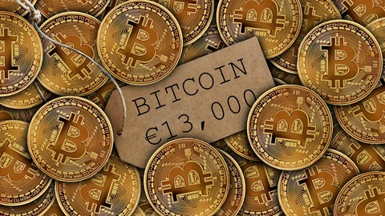

Майнинг — это деятельность по созданию новых структур (обычно речь идёт о новых блоках в блокчейне) для обеспечения функционирования криптовалютных платформ.
За создание очередной структурной единицы обычно предусмотрено вознаграждение за счёт новых (эмитированных) единиц криптовалюты и/или комиссионных сборов.
Обычно майнинг сводится к серии вычислений с перебором параметров для нахождения хеша с заданными свойствами.
Такие вычисления используются алгоритмами криптовалют для обеспечения защиты от повторного расходования одних и тех же единиц, а вознаграждение стимулирует людей расходовать свои вычислительные мощности и поддерживать работу сетей.
Майнить биткоины это значит сжигать мегаватты электроэнергии гоняя круглыми сутками вычислительное оборудование. Казалось бы, почему не перейти на PoS-алгоритм консенсуса и жить в тишине и покое. Не все так просто ведь именно POW обеспечивает децентрализацию сети.
И поскольку, от биткоина во многом зависит состояние всего рынка, добыча BTC является важной составляющей криптоиндустрии и она будет продолжать развиваться. В этом обзоре мы расскажем возможно ли еще майнить биткоины самому и сколько на этом можно заработать.

Продовать и покупать биткоины можно перейдя по этой ссылке